Crab SED v6 64748 reselect44 - Scheme R - Double-Rayleigh Poisson-Unbinned Background
Scheme R - Double-Rayleigh PSF with Grid-Free Poisson Background. v6 chain for v6_64748_nhit100_reselect44_split56_miss030_double_rayleigh_scheme_R_fixed712979_poisson_unbinned, reusing the v6_64748_nhit100_highEplus1_split56 nominal inputs and Stage C event reduction. The first Nhit bin is [100,200); >=6 remains a diagnostic tail outside Stage F/G.
Executive Check
| Gate | Status | Evidence |
|---|---|---|
| run id | pass | v6_64748_nhit100_reselect44_split56_miss030_double_rayleigh |
| Nhit binning | pass | [100,200) |
| tail policy | pass | 7 >=6 tail cells, 0 included |
| selector | pass | 44 fit cells; 10 forced in, 5 forced out |
| selector 75/90 swap | pass | cell 75 included=True; cell 90 included=False; total=44 |
| Stage C files | pass | 3,969 processed, missing time 0, entry mismatch 0 |
| Stage E signal | pass | formal sigma 67.497 |
| Stage F fit | pass | preferred logpar |
| Stage G points | pass | 7 Nhit points, 11 predE points |
| fixed containment contract | pass | derived=0.7129790300890827; expected=0.7129790300890827; applications=1; downstream=1.0 |
| metadata pollution | passed | 0 legacy main-input path/token offenders |
Slurm Jobs
All heavy recomputation stages are intended to run through the Slurm dependency chain. This table is populated from PIPELINE_JOB_IDS when available.
| Stage | Job | State | Elapsed | Exit | Name |
|---|---|---|---|---|---|
| grid | 65261 | COMPLETED | 00:00:56 | 0:0 | v6_64748_poisson_unbinned_grid |
| bootstrap | 65262 | COMPLETED | 00:24:42 | 0:0 | v6_64748_poisson_unbinned_bootstrap |
| report | 65279 | COMPLETED | 00:02:58 | 0:0 | v6_64748_unbinned_report |
Inputs And Outputs
The main chain uses the 64748 observation eval root and its recovered-time tree. The response, PSF, aperture response, fit, and SED products are all under the new run namespace.
| Field | Value |
|---|---|
| Experiment id | v6_64748_nhit100_reselect44_split56_miss030_double_rayleigh_scheme_R_fixed712979_poisson_unbinned |
| Scheme | R - Scheme R - Double-Rayleigh PSF with Grid-Free Poisson Background |
| Input commit SHA | 018d5568994c6406299b74a945df0f6dca9f7f15 |
| Analysis response | /mnt/mydisk/server/projects/energy_reconstruction/apply/output/stage_e_v6_64748_nhit100_reselect44_split56_miss030_fixed712979_rayleigh_annnorm/response_v6_64748_nhit100_reselect44_split56_miss030_fixed712979_rayleigh.npz |
| Observation root | /mnt/mydisk/WCDA_observation_eval_64748 |
| Recovered time root | /mnt/mydisk/WCDA_observation_eval_64748/recovered_time |
| MC candidate cache | /mnt/mydisk/WCDA_simulation_binned_response_v6_64748_nhit100_highEplus1_split56_candidate |
| Model run dir | /mnt/mydisk/server/projects/energy_reconstruction/runs/theta_recoxy_position_embed_noemax_no_core_cut_64748 |
| Fit selector | ../config/cell_selector_v6_64748_nhit100_reselect44_split56_miss030_fit.csv |
| Stage C input entries | 254,436,994 |
| After configured-cell selection | 113,938,262 |
| Stage | Primary output |
|---|---|
| Prepare/cache | /mnt/mydisk/WCDA_simulation_binned_response_v6_64748_nhit100_highEplus1_split56_candidate |
| Stage A response | apply/output/stage_a_v6_64748_nhit100_highEplus1_split56 (reused) |
| Stage B PSF | apply/output/stage_b_v6_64748_nhit100_reselect44_split56_miss030_double_rayleigh |
| Analysis response | apply/output/stage_e_v6_64748_nhit100_reselect44_split56_miss030_fixed712979_rayleigh_annnorm |
| Stage C observation | apply/output/stage_c_v6_64748_nhit100_highEplus1_split56 (reused) |
| Stage D background | apply/output/v6_64748_nhit100_reselect44_split56_miss030_double_rayleigh_scheme_R_fixed712979_poisson_unbinned/branches/h010_x0_y0/stage_d/runs/stage_d |
| Stage E signal | apply/output/v6_64748_nhit100_reselect44_split56_miss030_double_rayleigh_scheme_R_fixed712979_poisson_unbinned/branches/h010_x0_y0/stage_e/runs/stage_e |
| Stage F fit | apply/output/v6_64748_nhit100_reselect44_split56_miss030_double_rayleigh_scheme_R_fixed712979_poisson_unbinned/branches/h010_x0_y0/stage_f/runs/stage_f |
| Stage G SED | apply/output/v6_64748_nhit100_reselect44_split56_miss030_double_rayleigh_scheme_R_fixed712979_poisson_unbinned/branches/h010_x0_y0/stage_g/runs/stage_g |
Selector Rule
preserve original MC-ridge fit cells; add at most one adjacent higher predE bin per Nhit; apply explicit include/exclude overrides; never include >=6 tail cells in Stage F/G
| Nhit | Status | Candidate | MC count | PSF gate | Reasons |
|---|---|---|---|---|---|
[100,200) | included_highEplus1 | [3.25,3.5) cell 4 | 54,366 | 1 | pass |
[200,300) | included_highEplus1 | [3.75,4.0) cell 19 | 17,909 | 1 | pass |
[300,500) | rejected_highEplus1_probe | [5.5,6) cell 38 | 13,883 | 0 | containment_warning |
[500,800) | diagnostic_tail_only | >=6 cell 52 | 158 | 0 | tail_ge6_excluded_from_main_fit |
[800,1100) | rejected_highEplus1_probe | [5.5,6) cell 64 | 3,211 | 0 | containment_warning |
[1100,2000) | rejected_highEplus1_probe | [4.75,5.0) cell 75 | 2,279 | 0 | valid_events_le_0;effective_events_lt_200;core_fit_effective_events_lt_200;theta_missing_mass_gt_0.3;containment_warning;angle_check_warning |
[2000,3000) | diagnostic_tail_only | >=6 cell 91 | 0 | 0 | tail_ge6_excluded_from_main_fit |
Included highEplus1 cells
| Cell | Nhit | predE | MC count | PSF reason |
|---|---|---|---|---|
| 4 | [100,200) | [3.25,3.5) | 54,366 | pass |
| 19 | [200,300) | [3.75,4.0) | 17,909 | pass |
Rejected highEplus1 probes
| Cell | Nhit | predE | MC count | Reason |
|---|---|---|---|---|
| 38 | [300,500) | [5.5,6) | 13,883 | containment_warning |
| 64 | [800,1100) | [5.5,6) | 3,211 | containment_warning |
Explicit selector overrides
| Action | Cell | Nhit | predE | PSF status |
|---|---|---|---|---|
| include | 5 | [100,200) | [3.5,3.75) | containment_warning |
| include | 6 | [100,200) | [3.75,4.0) | containment_warning |
| include | 20 | [200,300) | [4.0,4.25) | pass |
| include | 21 | [200,300) | [4.25,4.5) | containment_warning |
| include | 34 | [300,500) | [4.25,4.5) | pass |
| include | 47 | [500,800) | [4.25,4.5) | pass |
| include | 48 | [500,800) | [4.5,4.75) | pass |
| include | 61 | [800,1100) | [4.5,4.75) | pass |
| include | 62 | [800,1100) | [4.75,5.0) | pass |
| include | 75 | [1100,2000) | [4.75,5.0) | valid_events_le_0;effective_events_lt_200;core_fit_effective_events_lt_200;theta_missing_mass_gt_0.3;containment_warning;angle_check_warning |
| exclude | 37 | [300,500) | [5,5.5) | containment_warning |
| exclude | 50 | [500,800) | [5,5.5) | containment_warning |
| exclude | 51 | [500,800) | [5.5,6) | containment_warning |
| exclude | 63 | [800,1100) | [5,5.5) | pass |
| exclude | 90 | [2000,3000) | [5.5,6) | valid_events_le_0;effective_events_lt_200;core_fit_effective_events_lt_200;theta_missing_mass_gt_0.3;containment_warning;angle_check_warning |
Grid-Free Unbinned Poisson Method And Acceptance
B_on envelope at machine zero. This is a regression check expected by construction, not an independent model-selection test. The independent diagnostic retained here is the time split of g(tau)=B_on/N_ann.For each of the seven order-2 cells, the shared polynomial shape is fitted directly to continuous OFF-annulus event coordinates with the profiled objective -sum log q(x_e,y_e) + N_ann log integral_annulus(q). Positivity is enforced over the full 6 deg fiducial disk. The centered analytic aperture integral depends on the radial trace tau=cxx+cyy; plane and constant cells remain unchanged.
| Cell | B_on binned | B_on unbinned | Delta B_on [%] | tau binned | tau unbinned |
|---|---|---|---|---|---|
| 1 | 1.56783945e+05 | 1.56826368e+05 | 0.027058 | -0.0056548 | -0.00570921 |
| 2 | 1.50153917e+05 | 1.50172232e+05 | 0.012198 | -0.00362877 | -0.00365337 |
| 4 | 24715.418 | 24682.442 | -0.13342 | -0.00953432 | -0.00933855 |
| 5 | 22135.446 | 22103.968 | -0.14221 | -0.016927 | -0.0167771 |
| 6 | 18343.173 | 18474.97 | 0.71851 | -0.0238102 | -0.0242057 |
| 19 | 5731.7392 | 5699.8181 | -0.55692 | -0.0158586 | -0.0152657 |
| 20 | 4214.1562 | 4192.9165 | -0.50401 | -0.0263419 | -0.0259826 |
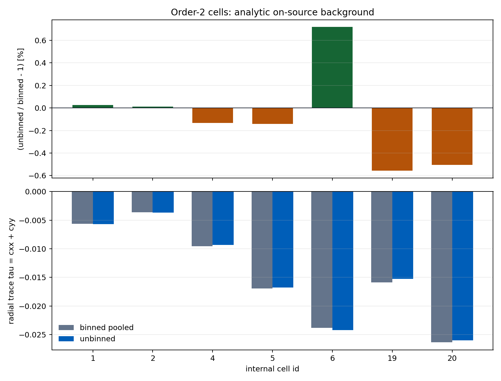

Time-Split Shape Diagnostic
|Delta g|/sigma=0.83436 against the prototype limit 1. The production split used the matched-livetime calendar midpoint MJD 59670.16; it was not an equal-event median split, so this remains diagnostic rather than a promotion gate.| Cell | g half 1 | g half 2 | |Delta g| | |Delta g|/sigma | Status |
|---|---|---|---|---|---|
| 1 | 0.05965097 | 0.0594734 | 1.7757e-04 | 0.8344 | PASSED |
| 2 | 0.04597685 | 0.04595099 | 2.5863e-05 | 0.1746 | PASSED |
| 4 | 0.07503216 | 0.07475533 | 2.7683e-04 | 0.3385 | PASSED |
| 5 | 0.1249424 | 0.1237194 | 0.001223 | 0.641 | PASSED |
| 6 | 0.2240526 | 0.2242322 | 1.7957e-04 | 0.03813 | PASSED |
| 19 | 0.1078058 | 0.1056958 | 0.00211 | 0.7184 | PASSED |
| 20 | 0.1934924 | 0.193485 | 7.3598e-06 | 9.5832e-04 | PASSED |
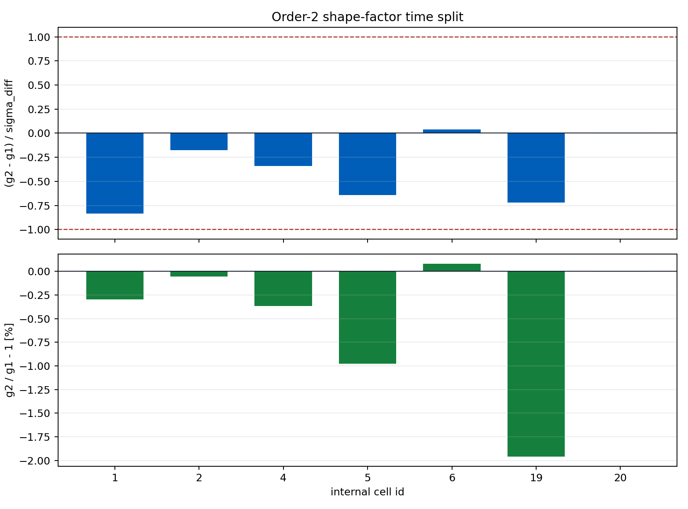
Unbinned Bootstrap Background Evidence
The covariance artifact uses a Poissonized nonparametric event bootstrap: OFF coordinates are resampled with replacement, the event total is Poisson fluctuated, and every order-2 surface is refit. The covariance-aware Stage F fit is diagnostic; the conservative fit remains preferred.
| Diagnostic | Value |
|---|---|
| Replicates completed / requested | 1000 / 1000 |
| Refit failures | 0 |
| Minimum excess-covariance eigenvalue | 12.857602 |
| Excess-covariance condition number | 18654.476 |
| Stage D SHA256 | b500b6431e502cb314f8d4b91b16102a08a23b9ee2fcb3a03e56002857e34aef |
| Stage E SHA256 | fbd81bb5c4b74ebe990919089c5887ec1e8167832797ad4eb5a25a1f7cd994a5 |
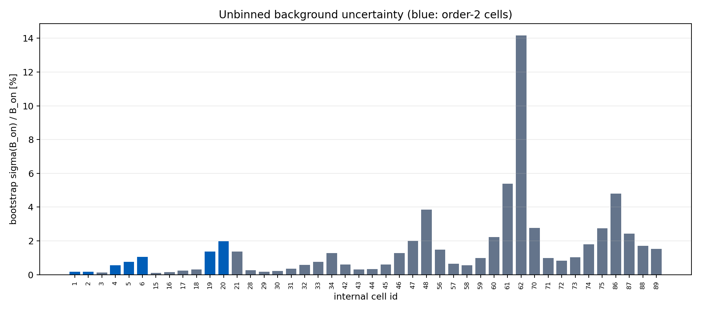
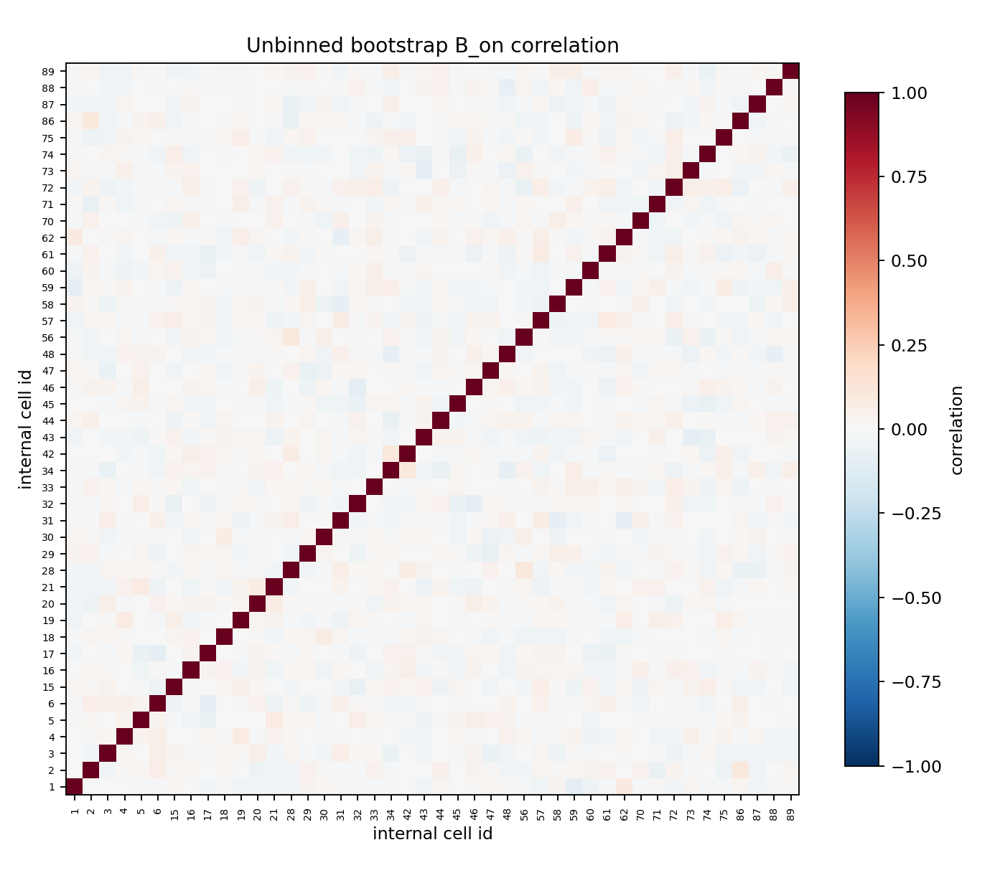
Binned Versus Unbinned Spectral Comparison
The background change is numerically stable: the largest order-2 B_on shift is 0.719%. Stage F chi-square is reported as a diagnostic and is not used to select the background method.
| Contract | Background / uncertainty | Valid | phi0 | alpha | beta | chi2/ndof | chi2/ndof value |
|---|---|---|---|---|---|---|---|
| Poisson pooled conservative | binned profiled-Poisson; analytic B_on; primary | True | 2.4359235e-12 | 2.739049 | 0.09975702 | 578.403/41 | 14.1074 |
| Poisson pooled covariance-aware | binned bootstrap covariance; diagnostic | True | 2.4804590e-12 | 2.739902 | 0.1074083 | 802.433/41 | 19.5715 |
| Poisson unbinned conservative | continuous profiled-Poisson curvature; analytic B_on; primary | True | 2.4370573e-12 | 2.739115 | 0.1002796 | 582.284/41 | 14.2021 |
| Poisson unbinned covariance-aware | unbinned bootstrap covariance; diagnostic | True | 2.4798069e-12 | 2.739573 | 0.106569 | 805.368/41 | 19.6431 |
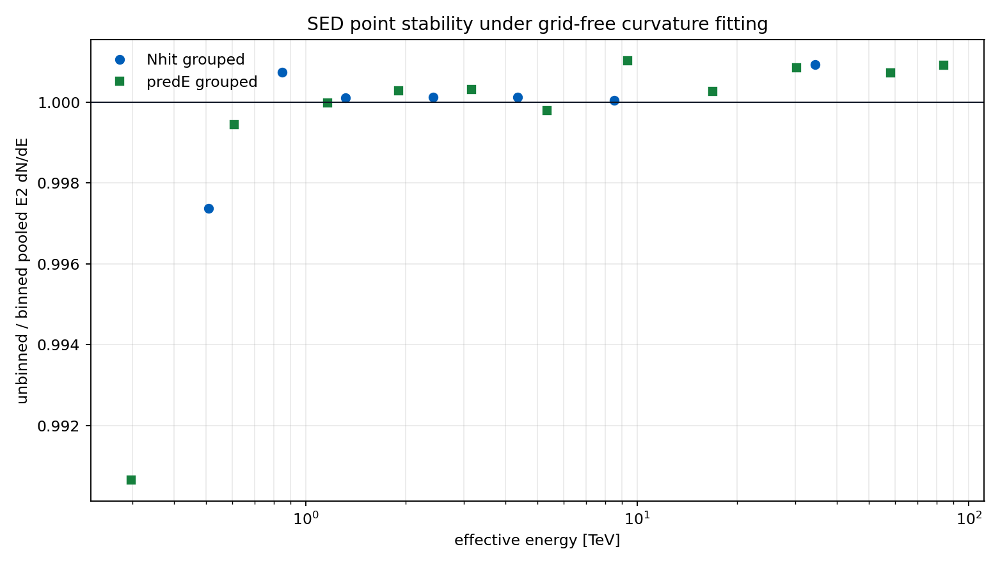
Unbinned Experiment Provenance
| Field | Value |
|---|---|
| Experiment id | v6_64748_nhit100_reselect44_split56_miss030_double_rayleigh_scheme_R_fixed712979_poisson_unbinned |
| Implementation commit | 018d5568994c6406299b74a945df0f6dca9f7f15 |
| Grid Slurm job | 65261 (12/12 completed) |
| Bootstrap/time-split Stage F job | 65262 (completed) |
| Full-report/Stage G job | 65279 |
| Unbinned Stage D SHA256 | b500b6431e502cb314f8d4b91b16102a08a23b9ee2fcb3a03e56002857e34aef |
| Unbinned Stage F metadata SHA256 | cee2b3eedfda0e57a841d9695c90d2065db61a28704b2cbf675f0637b8b6238d |
| Unbinned Stage G SHA256 | 200c8759a03e3b41e5061b7555544f993d7e9c749e2d12744471fa45411e8330 |
poisson_pooled namespace and no automatic promotion of preferred_fit. The global LogPar goodness of fit remains poor and is not repaired by this background change.Stage C Time Audit
Stage C used /mnt/mydisk/WCDA_observation_eval_64748/recovered_time. Missing-time and entry-mismatch rows are listed below when present.
| Metric | Value |
|---|---|
| Processed files | 3,969 |
| Missing time files | 0 |
| Entry mismatch files | 0 |
| Selected rows | 113,938,262 |
| Matched MJD min | 59579.667 |
| Matched MJD max | 59760.652 |
Stage A-B-D-E Diagnostics
Stage A nominal response is primary_thrown_response; Stage F/G use primary_thrown_response under Scheme R - Double-Rayleigh PSF with Grid-Free Poisson Background. Stage B wrote 91 formal PSF rows. Shared Stage B and Stage D figures are scheme-independent inputs copied into this report's asset directory. Figure labels use display IDs 1-84 after excluding the predE >= 6 tail column from numbering; stored data and metadata retain the original 91-cell internal IDs. The theta grid shows each cell's raw mc_weight-normalized distribution before Crab reweighting; orange shading marks Crab-positive theta bins without MC support. In the radial grid, purple profiles and dashed Rayleigh curves are diagnostic-only fits made without the formal true-energy cut when the formal profile is empty; they do not replace the Stage B PSF used by Stage A/F. Panels with no raw MC events are labeled explicitly. Pale green panels mark the 44 cells used by Stage F/G.


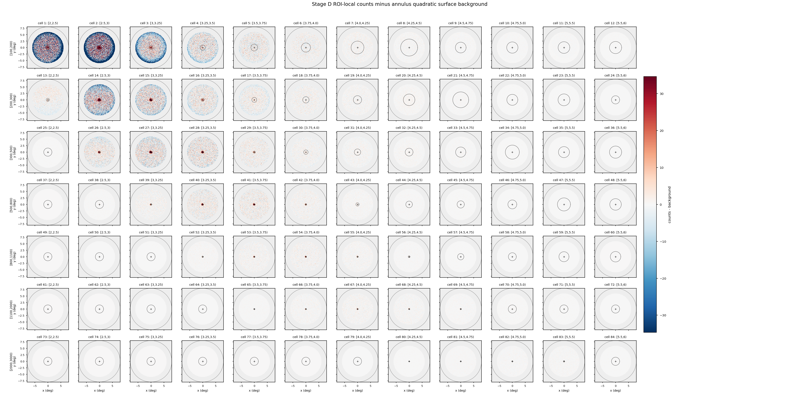

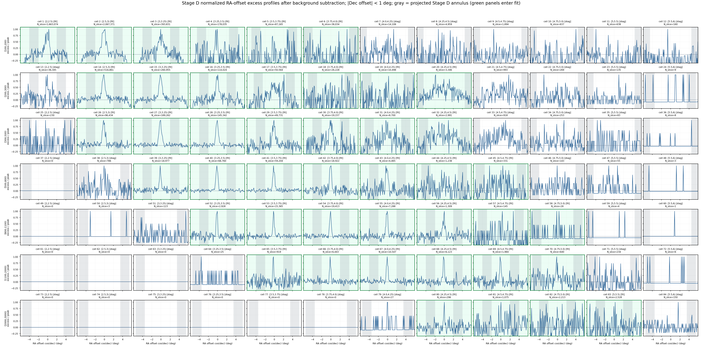

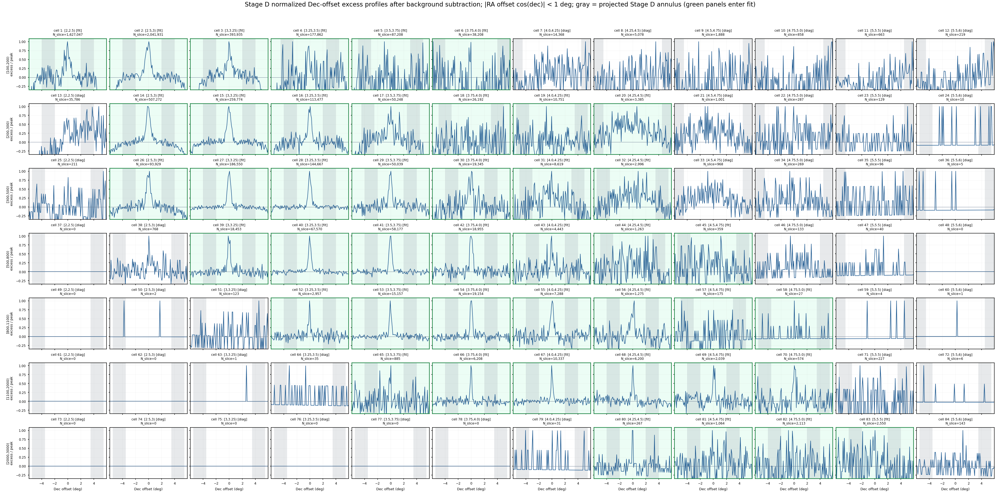
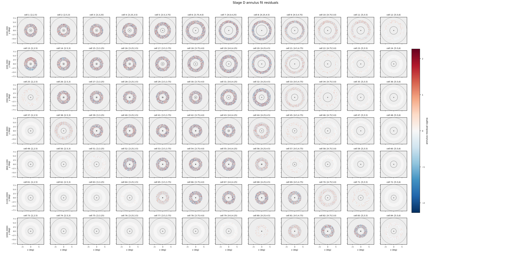
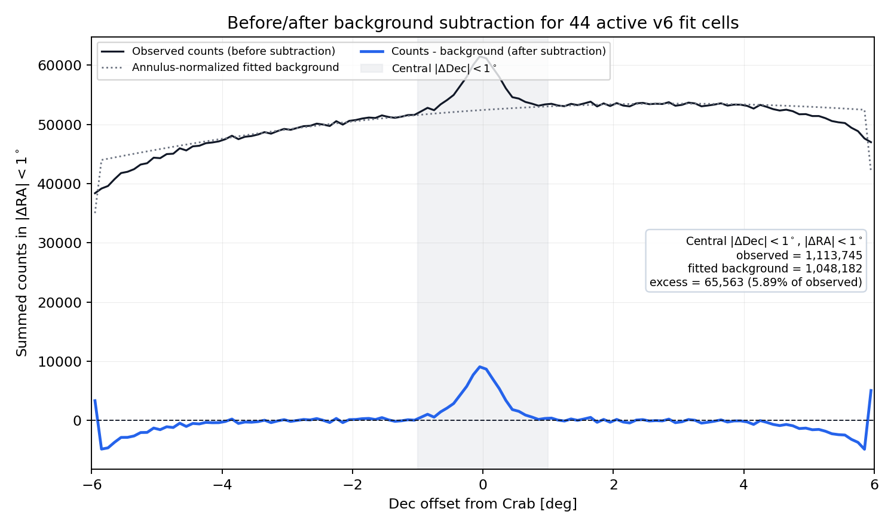
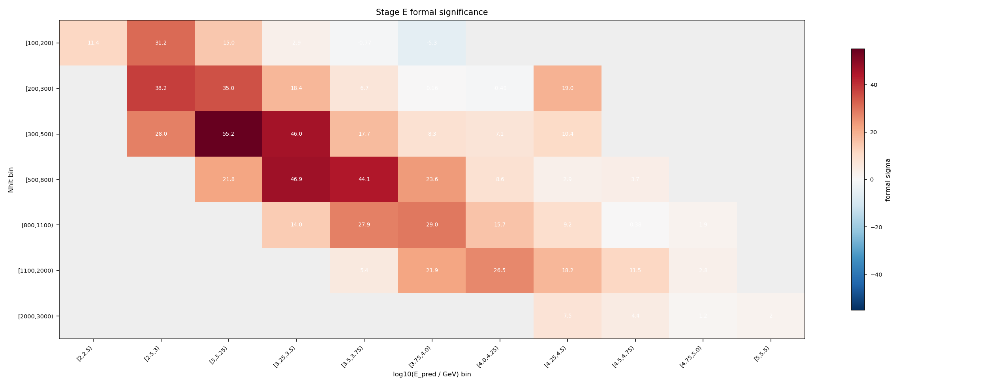
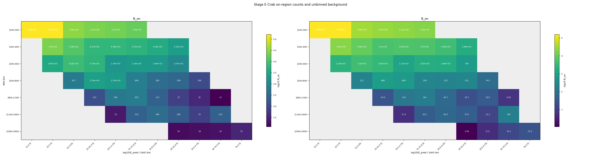
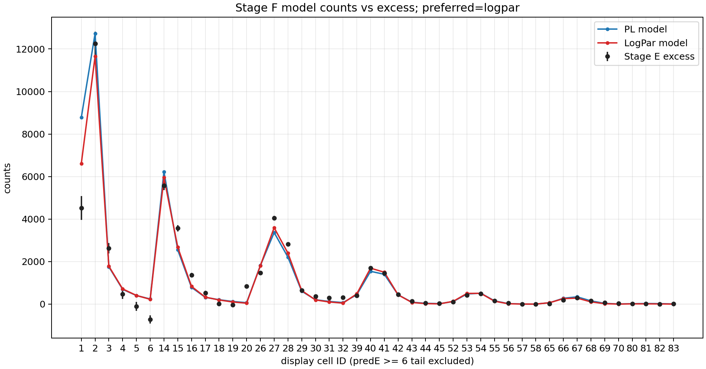
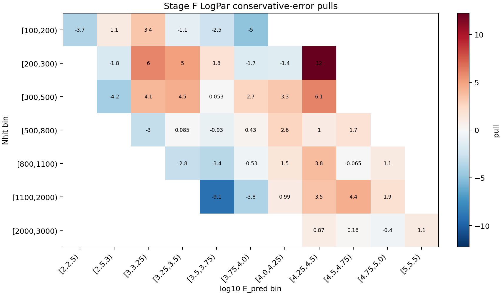
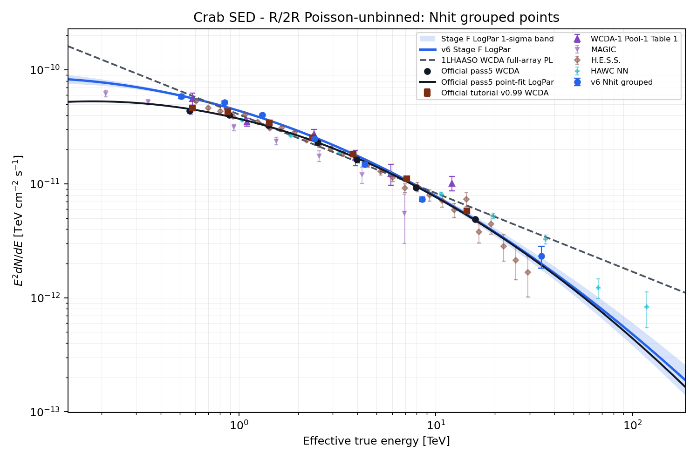
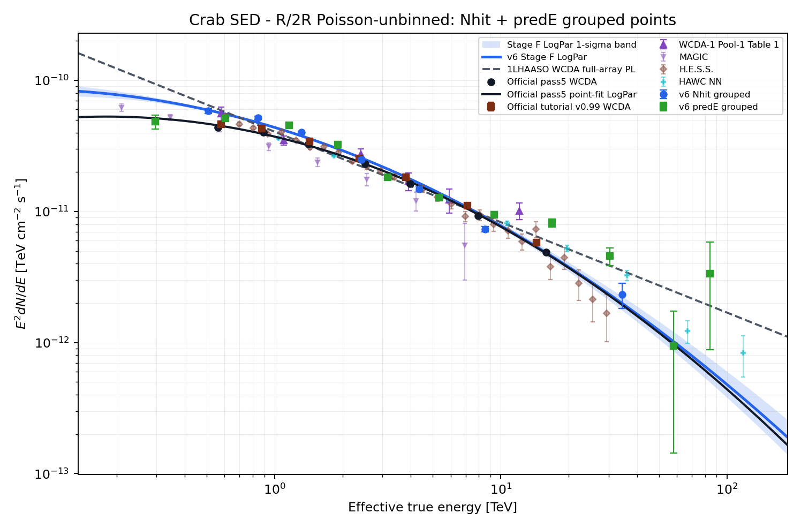
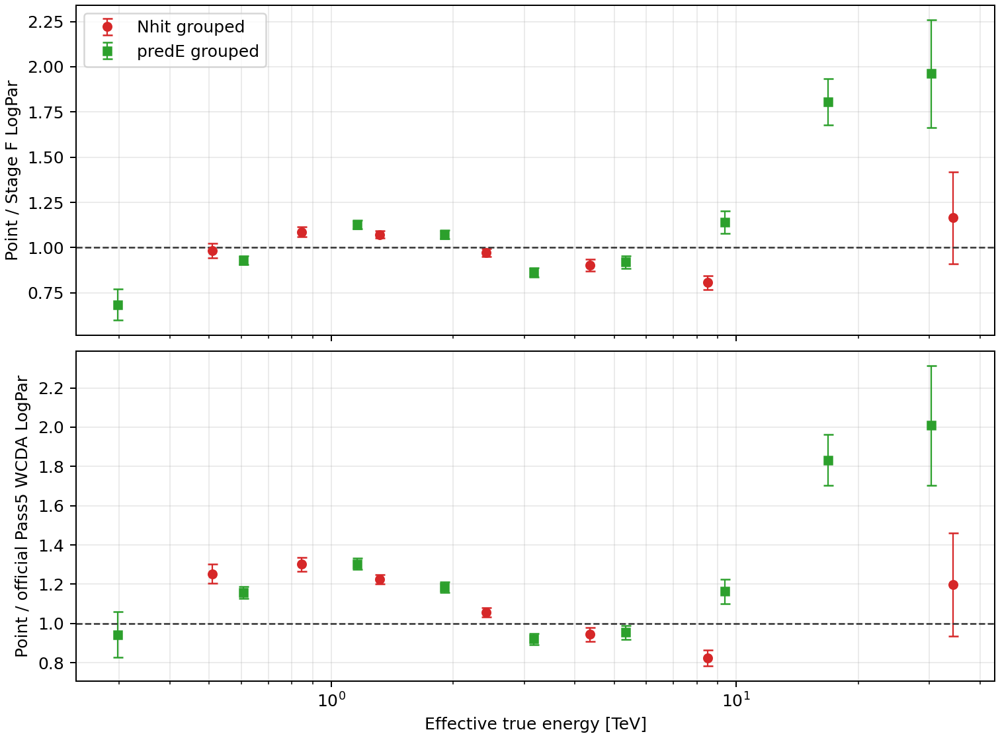
Stage F Fit
Stage F uses the frozen final selector and Scheme R - Double-Rayleigh PSF with Grid-Free Poisson Background. Stage B uses the double-Rayleigh PSF with F(r_opt)=0.7129790300890827. The 7 order-2 Stage D surfaces use continuous-event profiled-Poisson curvature and analytic circular B_on; the other 37 target cells retain their frozen lower-order contracts. Stage E containment is 1; Stage F/G use Aeff_R=0.7129790300890827*Aeff_nominal exactly once. The preferred model recorded by Stage F is logpar.
| Fit | Valid | chi2/ndof | p | phi0 | gamma/alpha | beta |
|---|---|---|---|---|---|---|
| PL conservative | True | 656.8/42 | 2.248e-111 | 2.2455e-12 | 2.645 | n/a |
| LogPar conservative | True | 582.3/41 | 8.049e-97 | 2.4371e-12 | 2.739 | 0.1003 |
| PL sqrt-N | True | 1057/42 | 3.565e-194 | 2.2783e-12 | 2.627 | n/a |
| LogPar sqrt-N | True | 916.6/41 | 1.360e-165 | 2.4897e-12 | 2.746 | 0.1152 |
Stage G SED
Stage G freezes the preferred Stage F spectrum with phi0=2.4371e-12, alpha=2.739, beta=0.1003 at 3 TeV. Quality status: passed.
| Nhit group | Cells | E_eff TeV | E2 dN/dE | Err | chi2/ndof |
|---|---|---|---|---|---|
[100,200) | 1;2;3;4;5;6 | 0.5085 | 5.8363e-11 | 2.351e-12 | 58.17/5 |
[200,300) | 15;16;17;18;19;20;21 | 0.8462 | 5.1747e-11 | 1.376e-12 | 213/6 |
[300,500) | 28;29;30;31;32;33;34 | 1.317 | 4.0357e-11 | 7.704e-13 | 96.33/6 |
[500,800) | 42;43;44;45;46;47;48 | 2.417 | 2.4937e-11 | 5.546e-13 | 19.2/6 |
[800,1100) | 56;57;58;59;60;61;62 | 4.349 | 1.4823e-11 | 5.521e-13 | 28.77/6 |
[1100,2000) | 70;71;72;73;74;75 | 8.504 | 7.3408e-12 | 3.598e-13 | 108.9/5 |
[2000,3000) | 86;87;88;89 | 34.33 | 2.3257e-12 | 5.074e-13 | 1.747/3 |
| PredE group | Cells | E_eff TeV | E2 dN/dE | Err | chi2/ndof |
|---|---|---|---|---|---|
[2,2.5) | 1 | 0.2973 | 4.8494e-11 | 6.048e-12 | 0/0 |
[2.5,3) | 2;15;28 | 0.6071 | 5.1396e-11 | 1.318e-12 | 13.07/2 |
[3,3.25) | 3;16;29;42 | 1.162 | 4.5517e-11 | 9.823e-13 | 45.53/3 |
[3.25,3.5) | 4;17;30;43;56 | 1.904 | 3.2231e-11 | 7.297e-13 | 45.17/4 |
[3.5,3.75) | 5;18;31;44;57;70 | 3.159 | 1.8222e-11 | 5.474e-13 | 76.53/5 |
[3.75,4.0) | 6;19;32;45;58;71 | 5.331 | 1.2756e-11 | 4.957e-13 | 44.2/5 |
[4.0,4.25) | 20;33;46;59;72 | 9.362 | 9.4744e-12 | 5.078e-13 | 17.7/4 |
[4.25,4.5) | 21;34;47;60;73;86 | 16.86 | 8.2045e-12 | 5.840e-13 | 175.6/5 |
[4.5,4.75) | 48;61;74;87 | 30.29 | 4.5577e-12 | 6.900e-13 | 12.17/3 |
[4.75,5.0) | 62;75;88 | 58.2 | 9.3849e-13 | 7.948e-13 | 4.745/2 |
[5,5.5) | 89 | 84.05 | 3.3539e-12 | 2.476e-12 | 0/0 |
Metadata Audit
Main-input metadata files were scanned for legacy cache/model path tokens. Status: passed.
Final v6 Fit Parameters
The preferred conservative-error fit is logpar at pivot energy 3 TeV, using dN/dE = phi0 * (E/E0)^[-alpha - beta * ln(E/E0)].
| Parameter | Best fit +/- 1 sigma | Unit |
|---|---|---|
phi0 | 2.4370573e-12 ± 3.855232e-14 | TeV^-1 cm^-2 s^-1 |
alpha | 2.739115 ± 0.0207316 | dimensionless |
beta | 0.1002796 ± 0.0143494 | dimensionless |
| Metric | Value |
|---|---|
| Fit valid | True |
| chi2 | 582.2841 |
| ndof | 41 |
| chi2/ndof | 14.20205 |
| p-value | 8.049428e-97 |
| Delta chi2 (PL - LogPar) | 74.49134 |
| Physical flux status | ok |
ok, but chi2/ndof=14.202 and p=8.0494e-97 indicate poor global goodness of fit.